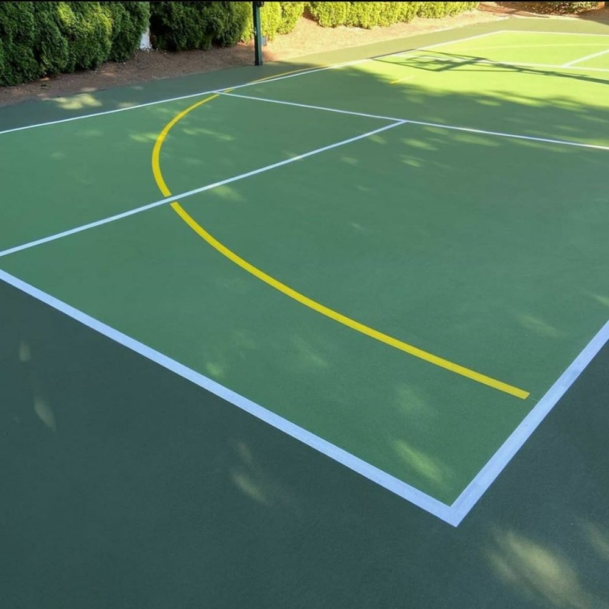
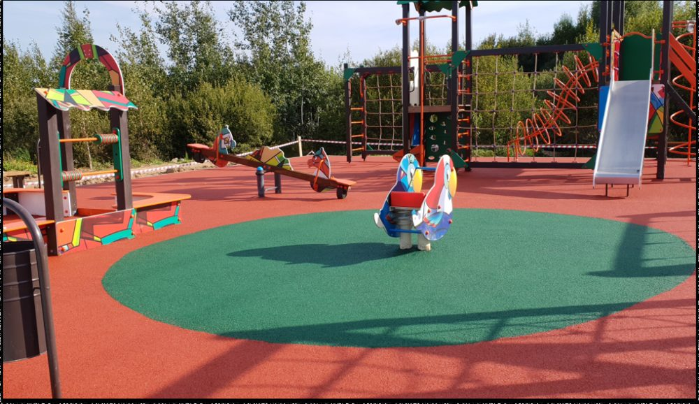
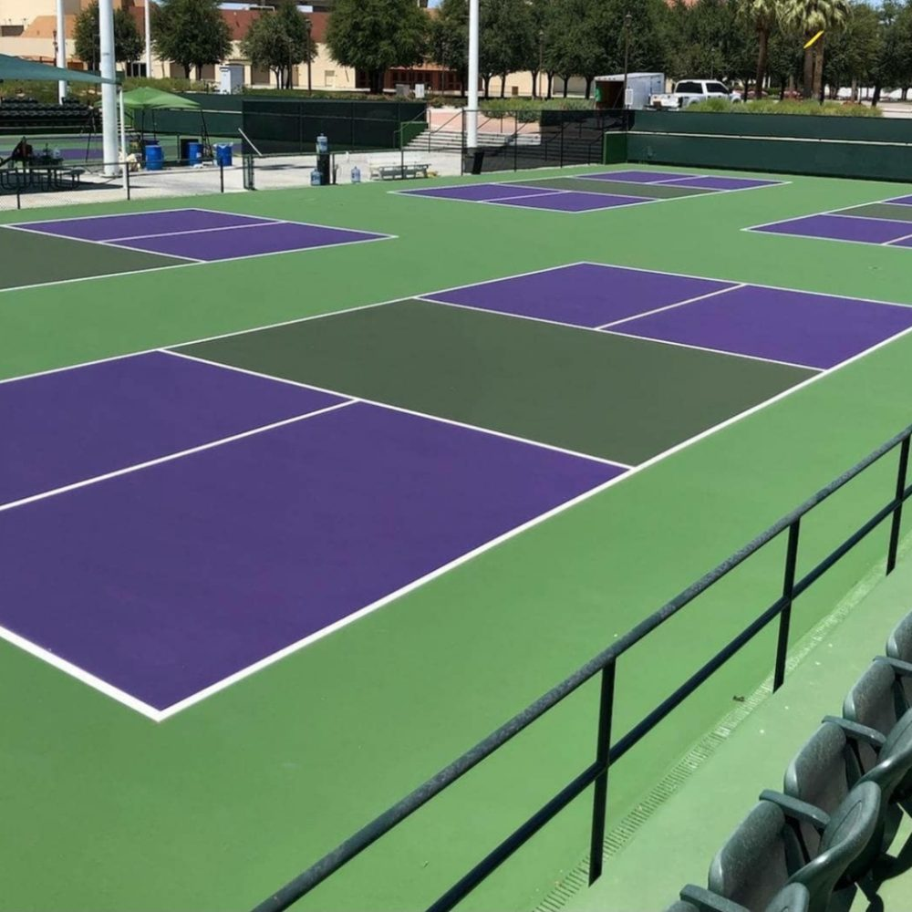
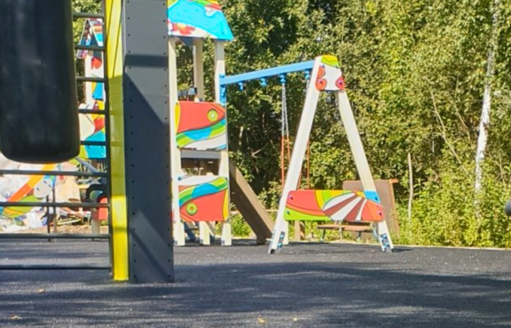
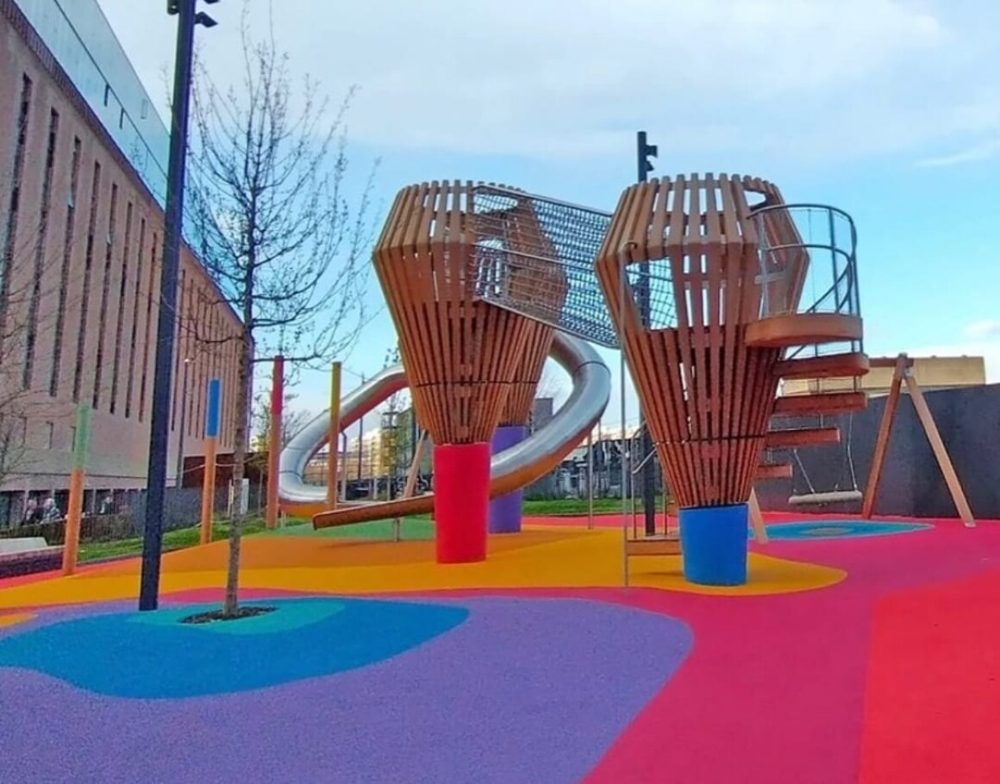
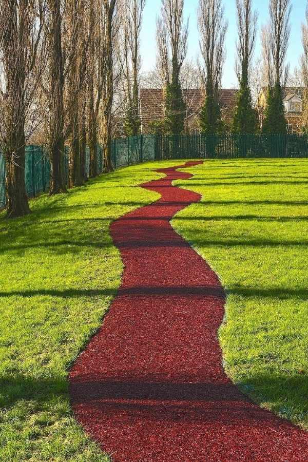
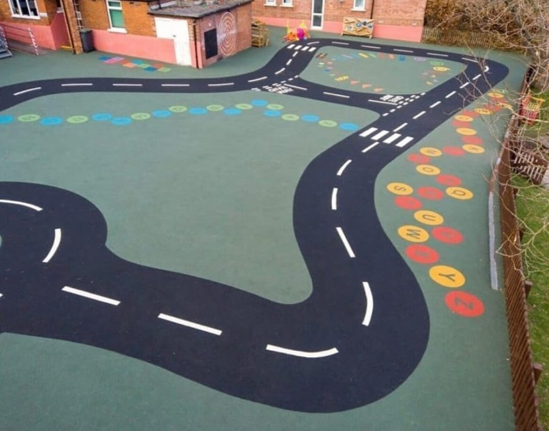
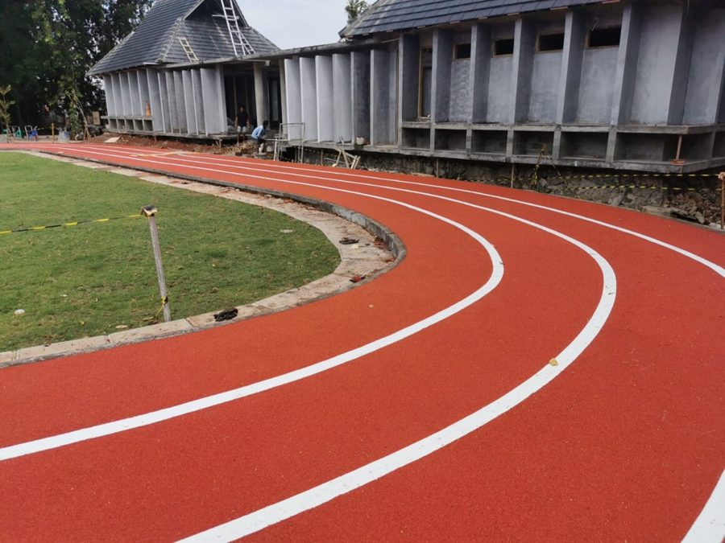

Укладка уличных спортивных покрытий под ключ
Спортивные и детские площадки, теннисные корты, мини-футбольные поля и воркаут-зоны в Москве и Московской области. От подготовки основания до покрытия и разметки.
Сферы применения
Покрытия для площадок, где важны безопасность, износостойкость и понятная приёмка.
Почему с нами удобно работать
Формулировки собраны из наших коммерческих предложений.
Виды покрытий
Покрытие подбираем под вид спорта, нагрузку и основание.
| Покрытие | Для чего | Где применяется |
|---|---|---|
| Бесшовное резиновое | Крошка SBR и EPDM на полиуретановом связующем. Травмобезопасность, цветные и декоративные зоны | Детские и спортивные площадки, беговые дорожки, воркаут-зоны |
| Резиновая плитка | Быстрый монтаж, замена отдельных участков | Детские и спортивные площадки, зоны отдыха |
| Полиуретан с крошкой SBR или EPDM | Эластичное покрытие для активных нагрузок | Беговые дорожки, многофункциональные площадки |
| Акриловый «хард» | Многослойное покрытие по асфальту или бетону | Теннисные и баскетбольные корты |
| Искусственная трава | Для футбола ворс 40–60 мм с засыпкой, для тенниса и многофункциональных площадок 10–22 мм | Футбольные и мини-футбольные поля, теннис, падел, ландшафт |
| Модульные покрытия | Сборная плитка для быстрого устройства площадки | Баскетбол, волейбол, универсальные площадки |
| Разметка и обновление цвета | Линии по виду спорта, восстановление цвета резины двухкомпонентной ПУ-краской | Уличные площадки и залы |
Также: спортивный линолеум и Регупол для залов, поставка материалов под заказ.
Заказчикам
Понятный расчёт, комплект документов и приёмка по акту.
| Заказчик | Что важно | Что получает |
|---|---|---|
| Муниципалитеты и школы | Безопасность детей, соответствие требованиям, понятная приёмка | Сертификаты и соответствие ГОСТ, состав работ, акт выполненных работ |
| Застройщики | Сроки, благоустройство дворов, один подрядчик | Полный цикл под ключ, понятные этапы и срок |
| Управляющие компании | Ремонт и обновление площадок, понятная смета | Обновление цвета, ремонт покрытия, спецификации |
| Спортивные организации | Покрытие под вид спорта и нагрузку | Подбор покрытия, разметка по нормативам вида спорта |
Работа по госзаказу
- КП с отдельными спецификациями материалов и работ
- Участие в закупках по 44-ФЗ и 223-ФЗ [уточнить]
- Исполнительная документация и акты [уточнить состав]
Опыт и допуски
- Опыт компании: [уточнить]
- СРО, лицензии, допуски: [уточнить]
- Отзывы и письма заказчиков: [уточнить]
Этапы работы
От заявки до подписания акта.
Примеры выполненных работ
Фотографии с действующего сайта sportpokrytie.ru. Адреса и заказчиков не указываем [уточнить].






Пример расчёта
Так выглядит коммерческое предложение: площадь, состав слоёв, срок и отдельные спецификации.

Инновационный центр «Сколково»
Двухслойное бесшовное покрытие для детской площадки: нижний слой из чёрной крошки SBR, верхний декоративный слой из цветной крошки EPDM.
Расчёт от 9 ноября 2026. Фото иллюстративное, с действующего сайта. Показывать как выполненный объект после подтверждения [уточнить]. Стоимость не раскрываем.
Материалы
Материалы, которые указаны в наших коммерческих предложениях.
Крошка SBR, 2–5 мм
Чёрная крошка из переработанной шинной резины. Амортизирующий слой.
Крошка EPDM, 1–3 мм
Цветная, стойкая к УФ и атмосферным воздействиям. Верхний декоративный слой.
Полиуретановое связующее
Связующее для резиновой крошки.
Бренды и поставщики: [уточнить, какие можно называть].
Гарантии и документы
Гарантия
На выполненные работы и материалы. Срок [уточнить].
Документы на материалы
Сертификаты качества, соответствие ГОСТ.
Приёмка
Акт выполненных работ. Исполнительная документация [уточнить состав].
Частые вопросы
Что важно проверить в основании перед укладкой?
Ровность, прочность и влажность. Ориентиры с нашего действующего сайта: отклонения не более 2 мм на 2 м, прочность стяжки не менее 15 МПа, влажность не выше 2%. Для уличных площадок значения уточняем [уточнить].
Зачем нужно грунтование?
Оно упрочняет поверхностный слой основания и заполняет поры, от этого зависит качество финишного слоя.
Можно ли класть покрытие по цементному молочку?
Нет. Оно отслаивается и должно быть удалено.
Чем отличаются SBR и EPDM?
SBR делают из переработанной шинной резины, это амортизирующий слой. EPDM цветная и стойкая к погоде, её используют для верхнего слоя.
Нужна ли засыпка искусственной траве для футбола?
Да. Футбольную траву кладут с засыпкой кварцевым песком и резиновой крошкой.
Входит ли разметка в работы?
Да, разметка определяет игровые зоны и влияет на безопасность и эксплуатацию площадки.
В каких регионах вы работаете?
Москва и Московская область. Другие регионы [уточнить].
Запросить коммерческое предложение
Оставьте имя, телефон и почту. Мы свяжемся, уточним площадь и основание и подготовим расчёт.
